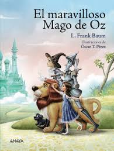
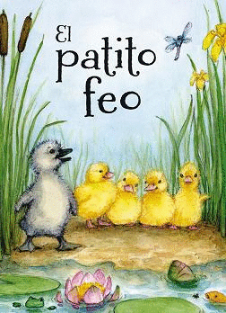
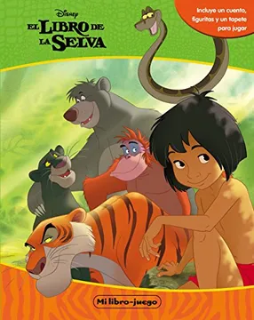

libro: Mago de oz La novela, que narra las aventuras de una muchacha llamada Dorothy Gale en la tierra de Oz, es una de las historias más conocidas de la cultura popular norteamericana y se ha traducido a muchos idiomas. Gracias al gran éxito de El maravilloso mago de Oz, L. Frank Baum escribió trece libros más sobre la tierra de Oz. El libro es de dominio público. 
libro 2: Patito feo En la granja había un gran alboroto: los polluelos de Mamá Pata estaban rompiendo el cascarón. Uno a uno, comenzaron a salir. Mamá Pata estaba tan emocionada con sus adorables patitos que no notó que uno de sus huevos, el más grande de todos, permanecía intacto. A las pocas horas, el último huevo comenzó a romperse. Mamá Pata, todos los polluelos y los animales de la granja, se encontraban a la expectativa de conocer al pequeño que tardaba en nacer. De repente, del cascarón salió un patito muy alegre. Cuando todos lo vieron se quedaron sorprendidos, este patito no era pequeño ni amarillo y tampoco estaba cubierto de suaves plumas. Este patito era grande, gris y en vez del esperado graznido, cada vez que hablaba sonaba como una corneta vieja. 
libro 3: Libro de la Selva El libro de la selva es, en realidad, una recopilación de cuentos. De cualquier forma, los primeros ocho son parte de una misma historia que comienza cuando un joven matrimonio pierde a su bebé en los bosques de la India mientras trataban de huir del ataque de Shere Khan (un enorme y feroz tigre de Bengala y el villano principal del libro). El bebé aparece en la cueva de una manada de lobos quienes lo salvan de las garras de Shere Khan. Raksha (la madre loba adoptiva) lo llama «Mowgli» —'la rana', dado que no tiene pelo 